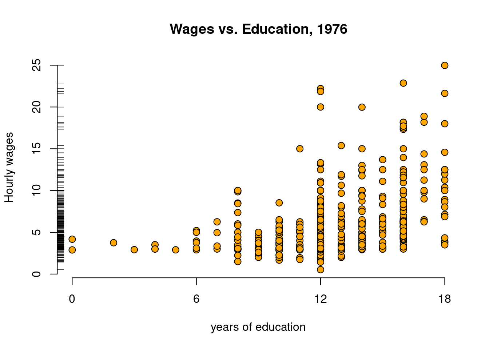

1 Nature and scope of Econometrics
2 Introductory Econometrics
2.1 Install packages
library(wooldridge)
library(readr)
library(stargazer)
library(kableExtra)
library(quantmod)
library(xts) 2.2 Useful dataset
earns <- read.csv("data/earns.csv")
gpa1 <- read.csv("data/gpa1.csv")
hprice1 <- read.csv("data/hprice1.csv")
hprice2 <- read.csv("data/hprice2.csv")
hprice3 <- read.csv("data/hprice3.csv")
jtrain <- read.csv("data/jtrain.csv")
nyse <- read.csv("data/nyse.csv")
phillips <- read.csv("data/phillips.csv")
rdchem <- read.csv("data/rdchem.csv")
traffic1 <- read.csv("data/traffic1.csv")
wage1 <- read.csv("data/wage1.csv")2.3 Simple regression model
2.3.1 Example 1: A log wage equation
- Load the
wage1data and check out the documentation.
\(educ\): years of education
\(wage\): average hourly earnings
\(lwage\): log of the average hourly earnings
- First, make a scatter-plot of the two variables and look for possible patterns in the relationship between them.
plot(y = wage1$wage, x = wage1$educ, col = "black", pch = 21, bg = "orange",
cex=1.25, xaxt="n", frame = FALSE, main = "Wages vs. Education, 1976",
xlab = "years of education", ylab = "Hourly wages")
axis(side = 1, at = c(0,6,12,18))
rug(wage1$wage, side=2, col="black")
It appears that on average, more years of education, leads to higher wages.
The example in the text is interested in the return to another year of education, or what the percentage change in wages one might expect for each additional year of education. To do so, one must use the \(log(\)
wage\()\). This has already been computed in the data set and is defined aslwage.
- Build a linear model to estimate the relationship between the log of wage (
lwage) and education (educ).
\[\widehat{log(wage)} = \beta_0 + \beta_1educ\]
log_wage_model <- lm(lwage ~ educ, data = wage1)- Print the
summaryof the results.
summary(log_wage_model)
Call:
lm(formula = lwage ~ educ, data = wage1)
Residuals:
Min 1Q Median 3Q Max
-2.21158 -0.36393 -0.07263 0.29712 1.52339
Coefficients:
Estimate Std. Error t value Pr(>|t|)
(Intercept) 0.583773 0.097336 5.998 3.74e-09 ***
educ 0.082744 0.007567 10.935 < 2e-16 ***
---
Signif. codes: 0 '***' 0.001 '**' 0.01 '*' 0.05 '.' 0.1 ' ' 1
Residual standard error: 0.4801 on 524 degrees of freedom
Multiple R-squared: 0.1858, Adjusted R-squared: 0.1843
F-statistic: 119.6 on 1 and 524 DF, p-value: < 2.2e-16- Use the
stargazerpackage to make beautiful table
stargazer(type = "html", log_wage_model, single.row = TRUE, header = FALSE, digits = 3)| Dependent variable: | |
| lwage | |
| educ | 0.083*** (0.008) |
| Constant | 0.584*** (0.097) |
| Observations | 526 |
| R2 | 0.186 |
| Adjusted R2 | 0.184 |
| Residual Std. Error | 0.480 (df = 524) |
| F Statistic | 119.582*** (df = 1; 524) |
| Note: | p<0.1; p<0.05; p<0.01 |
- Plot the \(log(\)
wage\()\) vseduc. The blue line represents the least squares fit.
plot(y = wage1$lwage, x = wage1$educ, main = "A Log Wage Equation",
col = "orange", pch = 21, bg = "black", cex=1.25,
xlab = "years of education", ylab = "log of average hourly wages",
xaxt="n", frame = FALSE)
axis(side = 1, at = c(0,6,12,18))
abline(log_wage_model, col = "black", lwd=2)
rug(wage1$lwage, side=2, col="black")2.4 Multiple regression analysis
2.4.1 Example 2: Hourly wage equation
Check the documentation for variable information
\(lwage\): log of the average hourly earnings
\(educ\): years of education
\(exper\): years of potential experience
\(tenutre\): years with current employer
- Plot the variables against
lwageand compare their distributions and slope (\(\beta\)) of the simple regression lines
par(mfrow=c(1,3))
plot(y = wage1$lwage, x = wage1$educ, col="orange", xaxt="n", frame = FALSE, main = "years of education", xlab = "", ylab = "")
mtext(side=2, line=2.5, "Hourly wages", cex=1.25)
axis(side = 1, at = c(0,6,12,18))
abline(lm(lwage ~ educ, data=wage1), col = "black", lwd=2)
plot(y = wage1$lwage, x = wage1$exper, col="orange", xaxt="n", frame = FALSE, main = "years of experience", xlab = "", ylab = "")
axis(side = 1, at = c(0,12.5,25,37.5,50))
abline(lm(lwage ~ exper, data=wage1), col = "black", lwd=2)
plot(y = wage1$lwage, x = wage1$tenure, col="orange", xaxt="n", frame = FALSE, main = "years with employer", xlab = "", ylab = "")
axis(side = 1, at = c(0,11,22,33,44))
abline(lm(lwage ~ tenure, data=wage1), col = "black", lwd=2)- Estimate the model regressing educ, exper, and tenure against log(wage).
\[\widehat{log(wage)} = \beta_0 + \beta_1educ + \beta_3exper + \beta_4tenure\]
hourly_wage_model <- lm(lwage ~ educ + exper + tenure, data = wage1)- Print the estimated model coefficients:
coefficients(hourly_wage_model)kable(coefficients(hourly_wage_model), digits=4, col.names = "Coefficients", align = 'l')| Coefficients | |
|---|---|
| (Intercept) | 0.2844 |
| educ | 0.0920 |
| exper | 0.0041 |
| tenure | 0.0221 |
- Plot the coefficients, representing percentage impact of each variable on \(log(\)
wage\()\) for a quick comparison.
barplot(sort(100*hourly_wage_model$coefficients[-1]), horiz=TRUE, las=1,
ylab = " ", main = "Coefficients of Hourly Wage Equation")2.5 Multiple regression analysis: inference
2.5.1 Example 3: Hourly Wage Equation
Using the same model estimated in example 3, examine and compare the standard errors associated with each coefficient. Like the textbook, these are contained in parenthesis next to each associated coefficient.
summary(hourly_wage_model)
Call:
lm(formula = lwage ~ educ + exper + tenure, data = wage1)
Residuals:
Min 1Q Median 3Q Max
-2.05802 -0.29645 -0.03265 0.28788 1.42809
Coefficients:
Estimate Std. Error t value Pr(>|t|)
(Intercept) 0.284360 0.104190 2.729 0.00656 **
educ 0.092029 0.007330 12.555 < 2e-16 ***
exper 0.004121 0.001723 2.391 0.01714 *
tenure 0.022067 0.003094 7.133 3.29e-12 ***
---
Signif. codes: 0 '***' 0.001 '**' 0.01 '*' 0.05 '.' 0.1 ' ' 1
Residual standard error: 0.4409 on 522 degrees of freedom
Multiple R-squared: 0.316, Adjusted R-squared: 0.3121
F-statistic: 80.39 on 3 and 522 DF, p-value: < 2.2e-16stargazer(type = "html", hourly_wage_model, single.row = TRUE, header = FALSE, digits=5)| Dependent variable: | |
| lwage | |
| educ | 0.09203*** (0.00733) |
| exper | 0.00412** (0.00172) |
| tenure | 0.02207*** (0.00309) |
| Constant | 0.28436*** (0.10419) |
| Observations | 526 |
| R2 | 0.31601 |
| Adjusted R2 | 0.31208 |
| Residual Std. Error | 0.44086 (df = 522) |
| F Statistic | 80.39092*** (df = 3; 522) |
| Note: | p<0.1; p<0.05; p<0.01 |
For the years of experience variable, or exper, use coefficient and Standard Error to compute the \(t\) statistic:
\[t_{exper} = \frac{0.004121}{0.001723} = 2.391\]
Fortunately, R includes \(t\) statistics in the summary of model diagnostics.
summary(hourly_wage_model)$coefficients Estimate Std. Error t value Pr(>|t|)
(Intercept) 0.284359541 0.104190379 2.729230 6.562466e-03
educ 0.092028988 0.007329923 12.555246 8.824197e-32
exper 0.004121109 0.001723277 2.391437 1.713562e-02
tenure 0.022067218 0.003093649 7.133070 3.294407e-12kable(summary(hourly_wage_model)$coefficients, align="l", digits=3)| Estimate | Std. Error | t value | Pr(>|t|) | |
|---|---|---|---|---|
| (Intercept) | 0.284 | 0.104 | 2.729 | 0.007 |
| educ | 0.092 | 0.007 | 12.555 | 0.000 |
| exper | 0.004 | 0.002 | 2.391 | 0.017 |
| tenure | 0.022 | 0.003 | 7.133 | 0.000 |
- lets plot this results
par(mfrow=c(2,2))
plot(y = hourly_wage_model$residuals, x = hourly_wage_model$fitted.values , col="orange", xaxt="n",
frame = FALSE, main = "Fitted Values", xlab = "", ylab = "")
mtext(side=2, line=2.5, "Model Residuals", cex=1.25)
abline(0, 0, col = "black", lty=2, lwd=2)
plot(y = hourly_wage_model$residuals, x = wage1$educ, col="green", xaxt="n",
frame = FALSE, main = "years of education", xlab = "", ylab = "")
axis(side = 1, at = c(0,6,12,18))
abline(0, 0, col = "black", lty=2, lwd=2)
plot(y = hourly_wage_model$residuals, x = wage1$exper, col="gray", xaxt="n",
frame = FALSE, main = "years of experience", xlab = "", ylab = "")
mtext(side=2, line=2.5, "Model Residuals", cex=1.25)
axis(side = 1, at = c(0,12.5,25,37.5,50))
abline(0, 0, col = "black", lty=2, lwd=2)
plot(y = hourly_wage_model$residuals, x = wage1$tenure, col="blue", xaxt="n",
frame = FALSE, main = "years with employer", xlab = "", ylab = "")
axis(side = 1, at = c(0,11,22,33,44))
abline(0, 0, col = "black", lty=2, lwd=2)- Plot the \(t\) statistics for a visual comparison:
barplot(sort(summary(hourly_wage_model)$coefficients[-1, "t value"]), horiz=TRUE, las=1,
ylab = " ", main = "t statistics of Hourly Wage Equation")2.5.2 Example 4: Effect of Job Training on Firm Scrap Rates
- Load the
jtraindata set. (From H. Holzer, R. Block, M. Cheatham, and J. Knott (1993), Are Training Subsidies Effective? The Michigan Experience, Industrial and Labor Relations Review 46, 625-636. The authors kindly provided the data.)
\(year:\) 1987, 1988, or 1989
\(union:\) =1 if unionized
\(lscrap:\) Log(scrap rate per 100 items)
\(hrsemp:\) (total hours training) / (total employees trained)
\(lsales:\) Log(annual sales, $)
\(lemploy:\) Log(umber of employees at plant)
First, use the
subsetfunction and it’s argument by the same name to return observations which occurred in 1987 and are not union.At the same time, use the
selectargument to return only the variables of interest for this problem.
jtrain_subset <- subset(jtrain, subset = (year == 1987 & union == 0), select = c(year, union, lscrap, hrsemp, lsales, lemploy))- Next, test for missing values. One can “eyeball†these with R Studio’s
Viewfunction, but a more precise approach combines thesumandis.nafunctions to return the total number of observations equal toNA.
sum(is.na(jtrain_subset))[1] 156- While
R’slmfunction will automatically remove missingNAvalues, eliminating these manually will produce more clearly proportioned graphs for exploratory analysis. Call thena.omitfunction to remove all missing values and assign the newdata.frameobject the namejtrain_clean.
jtrain_clean <- na.omit(jtrain_subset)- We use
jtrain_cleanto plot the variables of interest againstlscrap. Visually observe the respective distributions for each variable, and compare the slope (\(\beta\)) of the simple regression lines.
par(mfrow=c(1,3))
point_size <- 1.60
plot(y = jtrain_clean$lscrap, x = jtrain_clean$hrsemp, frame = FALSE,
main = "Total (hours/employees) trained", ylab = "", xlab="", pch = 21, bg = "lightgrey", cex=point_size)
mtext(side=2, line=2, "Log(scrap rate)", cex=1.25)
abline(lm(lscrap ~ hrsemp, data=jtrain_clean), col = "black", lwd=2)
plot(y = jtrain_clean$lscrap, x = jtrain_clean$lsales, frame = FALSE, main = "Log(annual sales $)", ylab = " ", xlab="", pch = 21, bg = "lightgrey", cex=point_size)
abline(lm(lscrap ~ lsales, data=jtrain_clean), col = "black", lwd=2)
plot(y = jtrain_clean$lscrap, x = jtrain_clean$lemploy, frame = FALSE, main = "Log(# employees at plant)", ylab = " ", xlab="", pch = 21, bg = "lightgrey", cex=point_size)
abline(lm(lscrap ~ lemploy, data=jtrain_clean), col = "black", lwd=2)- Now create the linear model regressing
hrsemp(total hours training/total employees trained),lsales(log of annual sales), andlemploy(the log of the number of the employees), againstlscrap(the log of the scrape rate).
\[lscrap = \alpha + \beta_1 hrsemp + \beta_2 lsales + \beta_3 lemploy\]
linear_model <- lm(lscrap ~ hrsemp + lsales + lemploy, data = jtrain_clean)- Finally, print the complete summary diagnostics of the model.
summary(linear_model)
Call:
lm(formula = lscrap ~ hrsemp + lsales + lemploy, data = jtrain_clean)
Residuals:
Min 1Q Median 3Q Max
-2.6301 -0.7523 -0.4016 0.8697 2.8273
Coefficients:
Estimate Std. Error t value Pr(>|t|)
(Intercept) 12.45837 5.68677 2.191 0.0380 *
hrsemp -0.02927 0.02280 -1.283 0.2111
lsales -0.96203 0.45252 -2.126 0.0436 *
lemploy 0.76147 0.40743 1.869 0.0734 .
---
Signif. codes: 0 '***' 0.001 '**' 0.01 '*' 0.05 '.' 0.1 ' ' 1
Residual standard error: 1.376 on 25 degrees of freedom
Multiple R-squared: 0.2624, Adjusted R-squared: 0.1739
F-statistic: 2.965 on 3 and 25 DF, p-value: 0.05134- Use
stargazerto create representative table
stargazer(type = "html", linear_model, single.row = TRUE, header = FALSE, digits=5)| Dependent variable: | |
| lscrap | |
| hrsemp | -0.02927 (0.02280) |
| lsales | -0.96203** (0.45252) |
| lemploy | 0.76147* (0.40743) |
| Constant | 12.45837** (5.68677) |
| Observations | 29 |
| R2 | 0.26243 |
| Adjusted R2 | 0.17392 |
| Residual Std. Error | 1.37604 (df = 25) |
| F Statistic | 2.96504* (df = 3; 25) |
| Note: | p<0.1; p<0.05; p<0.01 |
coefficient <- coef(linear_model)[-1]
confidence <- confint(linear_model, level = 0.95)[-1,]
graph <- drop(barplot(coefficient, ylim = range(c(confidence)),
main = "Coefficients & 95% C.I. of variables on Firm Scrap Rates"))
arrows(graph, coefficient, graph, confidence[,1], angle=90, length=0.55, col="black", lwd=2)
arrows(graph, coefficient, graph, confidence[,2], angle=90, length=0.55, col="black", lwd=2)2.6 Chapter 5: Multiple Regression Analysis: OLS Asymptotics
2.6.1 Example: Housing Prices and Distance From an Incinerator
- We will use the
hprice3data set.
\(lprice:\) Log(selling price)
\(ldist:\) Log(distance from house to incinerator, feet)
\(larea:\) Log(square footage of house)
- Graph the prices of housing against distance from an incinerator:
par(mfrow=c(1,2))
plot(y = hprice3$price, x = hprice3$dist, main = " ", xlab = "Distance to Incinerator in feet", ylab = "Selling Price", frame = FALSE, pch = 21, bg = "lightgrey")
abline(lm(price ~ dist, data=hprice3), col = "black", lwd=2)- Next, model the \(log(\)
price\()\) against the \(log(\)dist\()\) to estimate the percentage relationship between the two.
\[price = \alpha + \beta_1 dist\]
price_dist_model <- lm(lprice ~ ldist, data = hprice3)- Create another model that controls for “quality†variables, such as square footage
areaper house.
\[price = \alpha + \beta_1 dist + \beta_2 area\]
price_area_model <- lm(lprice ~ ldist + larea, data = hprice3)- Compare the coefficients of both models. Notice that adding
areaimproves the quality of the model, but also reduces the coefficient size ofdist.
summary(price_dist_model)
Call:
lm(formula = lprice ~ ldist, data = hprice3)
Residuals:
Min 1Q Median 3Q Max
-1.22356 -0.28076 -0.05527 0.27992 1.29332
Coefficients:
Estimate Std. Error t value Pr(>|t|)
(Intercept) 8.25750 0.47383 17.427 < 2e-16 ***
ldist 0.31722 0.04811 6.594 1.78e-10 ***
---
Signif. codes: 0 '***' 0.001 '**' 0.01 '*' 0.05 '.' 0.1 ' ' 1
Residual standard error: 0.4117 on 319 degrees of freedom
Multiple R-squared: 0.1199, Adjusted R-squared: 0.1172
F-statistic: 43.48 on 1 and 319 DF, p-value: 1.779e-10summary(price_area_model)
Call:
lm(formula = lprice ~ ldist + larea, data = hprice3)
Residuals:
Min 1Q Median 3Q Max
-1.23380 -0.18820 -0.01723 0.21751 0.86039
Coefficients:
Estimate Std. Error t value Pr(>|t|)
(Intercept) 3.49394 0.49065 7.121 7.18e-12 ***
ldist 0.19623 0.03816 5.142 4.77e-07 ***
larea 0.78368 0.05358 14.625 < 2e-16 ***
---
Signif. codes: 0 '***' 0.001 '**' 0.01 '*' 0.05 '.' 0.1 ' ' 1
Residual standard error: 0.3188 on 318 degrees of freedom
Multiple R-squared: 0.4738, Adjusted R-squared: 0.4705
F-statistic: 143.2 on 2 and 318 DF, p-value: < 2.2e-16- Use
stargazerfor better table
stargazer(type = "html",price_dist_model, price_area_model, single.row = TRUE, header = FALSE, digits=5)| Dependent variable: | ||
| lprice | ||
| (1) | (2) | |
| ldist | 0.31722*** (0.04811) | 0.19623*** (0.03816) |
| larea | 0.78368*** (0.05358) | |
| Constant | 8.25750*** (0.47383) | 3.49394*** (0.49065) |
| Observations | 321 | 321 |
| R2 | 0.11994 | 0.47385 |
| Adjusted R2 | 0.11718 | 0.47054 |
| Residual Std. Error | 0.41170 (df = 319) | 0.31883 (df = 318) |
| F Statistic | 43.47673*** (df = 1; 319) | 143.19470*** (df = 2; 318) |
| Note: | p<0.1; p<0.05; p<0.01 | |
- Graphing illustrates the larger coefficient for
area